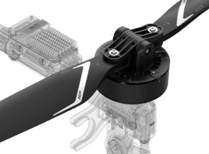
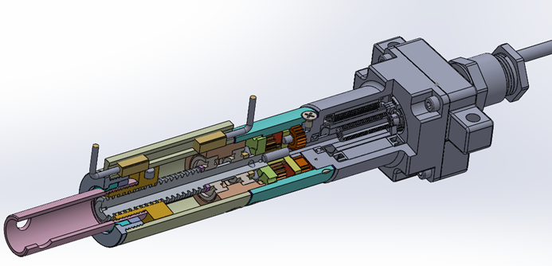
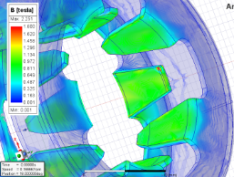
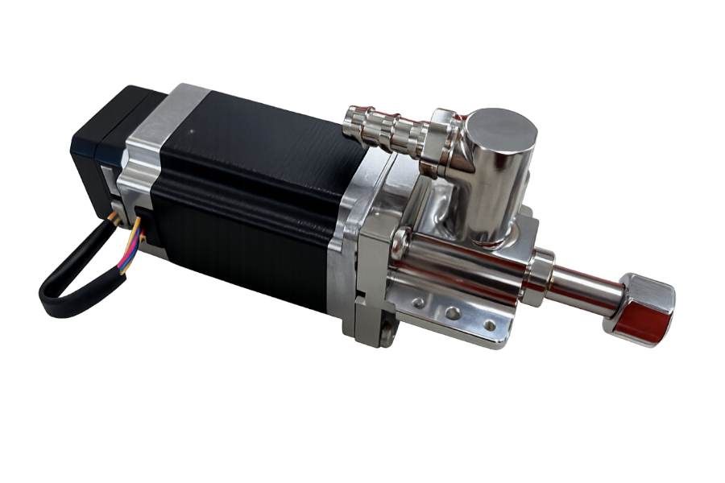
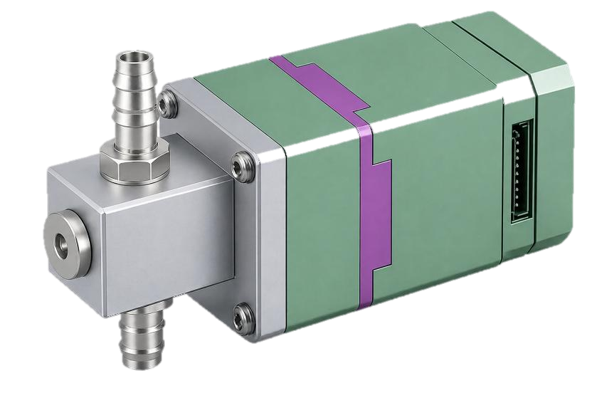
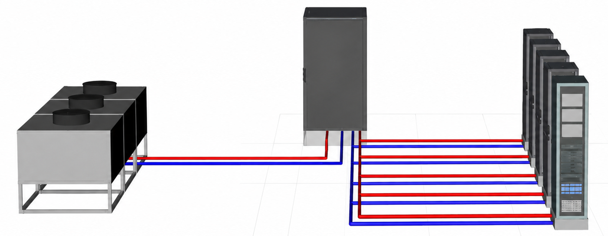
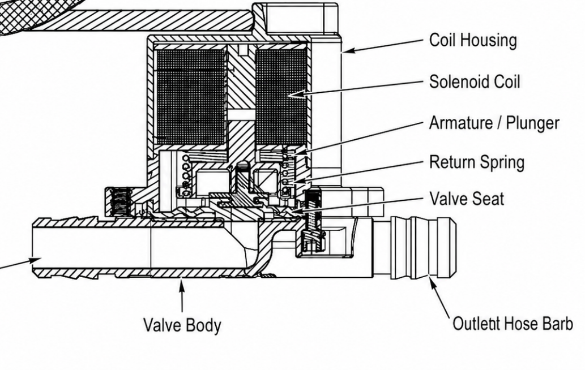
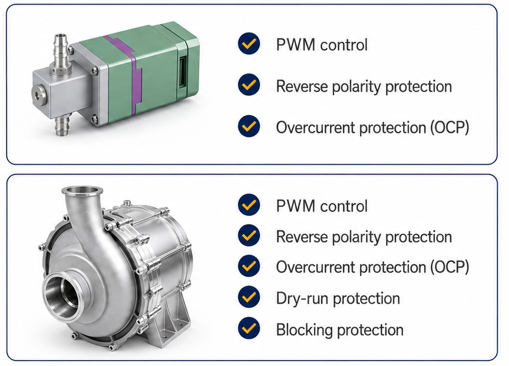

Five component lines built around one core competency: motor-driven active fluid drive & control.
五大產品線,圍繞同一核心能力打造:馬達驅動的主動式流體驅動與控制。
| Product產品 | Function功能 | Stage階段 |
|---|---|---|
| Motorized Valve電動閥 | Electric flow / path control (incl. balancing)電動流量／路徑控制(含平衡) | DVT |
| Solenoid Valve電磁閥 | On-off control; rapid fault isolation開關控制;快速故障隔離 | Concept |
| Pump泵浦 | Loop fluid drive迴路流體驅動 | MP |
| Flow Meter流量計 | Real-time flow sensing即時流量感測 | Concept |
Stages: Concept → EVT → DVT → MP (Mass Production) 階段說明:概念 → EVT → DVT → MP(量產)
High-efficiency, high-reliability drive; long-life operation with low vibration & noise; integrated drive of pumps and valves.
高效率、高可靠性驅動;長壽命運轉,低振動與低噪音;整合驅動泵浦與閥件。
20+ motor R&D specialists; BLDC (outrunner/inrunner) & stepper motor expertise; customized design & development.
20+ 位馬達研發專家;BLDC(外轉子／內轉子)與步進馬達專長;客製化設計開發。
Automated production line, stable process control, scalable manufacturing capability.
自動化產線、穩定製程控制、可擴充的製造能力。
Magnetic field simulation, thermal & structure analysis, design optimization before prototyping.
磁場模擬、熱與結構分析,打樣前完成設計優化。
Performance validation, noise & vibration test, reliability & durability testing.
性能驗證、噪音與振動測試、可靠度與耐久測試。

High-torque outrunner BLDC for agricultural drones; low vibration, long life, low noise.
高扭力外轉子 BLDC,應用於農用無人機;低振動、長壽命、低噪音。

High torque with lead screw output for energy storage systems; 10,000 on/off cycles; IP54.
高扭力螺桿輸出,應用於儲能系統;10,000 次啟閉壽命;IP54。

Magnetic field simulation drives motor efficiency prediction and torque & loss optimization.
透過磁場模擬預測馬達效率,並優化扭矩與損耗。
| Motor Type馬達類型 | Application應用 | Status狀態 |
|---|---|---|
| BLDC | Gimbal Motor雲台馬達 | MP |
| BLDC | Drone Motor無人機馬達 | MP |
| BLDC | Lead Screw Motor螺桿馬達 | MP |
| BLDC | Gimbal on Unmanned Aerial Vehicle無人機雲台 | Trial Run試產 |
| BLDC | Screw Conveyor Motor螺旋輸送馬達 | Trial Run試產 |
| Stepper步進馬達 | Automotive & Rotation Station汽車與旋轉平台 | MP |
| Stepper步進馬達 | DMS / OMS | Mockup樣機 |
Precision flow regulation & proportional control, with sealing reliability and programmable control — for closed-loop coolant management.
精密流量調節與比例控制,兼具密封可靠性與可程式化控制 — 實現閉迴路冷卻液管理。

Precisely balances coolant flow across rack units with closed-loop control; server-level reliability with 1M-cycle endurance.
閉迴路控制精準平衡機櫃冷卻液流量;伺服器級可靠度,耐久 1M 次循環。

All-in-one integration of PCBA / motor / valve body; fast response for dynamic loading.
PCBA／馬達／閥體一體化整合;動態負載下快速反應。

On-off control with fast fault isolation. Ideal for manifold branch control, single-server maintenance, leak protection, and startup/shutdown sequencing.
開關控制,快速故障隔離。適用於集管分支控制、單機維護、洩漏防護與啟閉時序控制。

| Valve Type閥門型式 | Normally closed (Fail-off)常閉(斷電失效) |
| Fluid介質 | Water |
| Interface介面 | Barb Connector 3/8" |
| Response Time反應時間 | 30ms |
| Rated Power額定功率 | 4.5W |
| Temperature Range工作溫度 | 0°C ~ 65°C |
| Protection Level防護等級 | IP67 |
| Parameter參數 | Specification規格 |
|---|---|
| Media / Fluid Type介質類型 | DI Water, PG25 |
| Operating Flow Rate工作流量 | 7.57 LPM (2GPM) |
| Positioning Accuracy定位精度 | ±1% |
| Linear Flow Range線性流量範圍 | 0.757 ~ 7.57 LPM |
| Supply Voltage供電電壓 | 12 VDC |
| IP Rating防護等級 | IP54 |
| Service Life使用壽命 | 50 million cycles (ON/OFF)5,000 萬次(開關循環) |
| Scenario應用情境 | Purpose用途 |
|---|---|
| Each manifold outlet各集管出口 | Control coolant supply to a single cold plate / tray / server控制單一冷板／機盤／伺服器的冷卻液供應 |
| Server maintenance伺服器維護 | Quickly shut off the branch while other branches keep operating快速關閉單一分支,其餘分支持續運作 |
| After leak detection偵測到洩漏後 | Automatically close the abnormal branch自動關閉異常分支 |
| Startup / shutdown sequencing啟閉時序控制 | Avoid water hammer, air bubbles, or instantaneous flow surges避免水鎚效應、氣泡或瞬間流量衝擊 |
Drives coolant circulation — flow & head — with a seal-less Canned Motor Pump (CMP) design for superior reliability.
驅動冷卻液循環,提供流量與揚程 — 採用無軸封罐式馬達泵浦(CMP)設計,可靠度更高。

Seal-less design isolates the motor from the fluid path, removing the dynamic shaft seal that limits traditional pump life.
無軸封設計將馬達與流體路徑隔離,移除限制傳統泵浦壽命的動態軸封。
| Traditional Seal Pump傳統軸封泵浦 | Kitek CMPKitek CMP | CMP AdvantageCMP 優勢 | |
|---|---|---|---|
| Size (L×H×W)尺寸(長×高×寬) | 520×248×228mm | 375×344×316mm | ~30% shorter length via seal-less design無軸封設計,長度縮短約 30% |
| Cooling Method冷卻方式 | Air cooling (8kW)氣冷(8kW) | Liquid cooling (8–22kW)液冷(8–22kW) | Supports higher power consumption可支援更高功耗 |
| Motor Sealing馬達密封 | Sealed design (Life: 1–2 yrs)軸封設計(壽命 1–2 年) | Seal-less design (Life: 3 yrs)無軸封設計(壽命 3 年) | Longer service life壽命更長 |
| Model型號 | Application應用 | Voltage電壓 | Power功率 | Max Flow最大流量 | Status狀態 |
|---|---|---|---|---|---|
| 8U | CDU (LTL In-Row) | AC 380V | 24kW | 1900 LPM | Tooling in progress模具開發中 |
| 5U | CDU (LTA In-Rack) | DC 51V | 2.5kW | 285 LPM | Tooling in progress模具開發中 |
| 4U | CDU (LTA In-Rack) | DC 48V | 510W | 170 LPM | MP |
| 1U | Server (Close-loop)伺服器(閉迴路) | DC 12V | 19.2W | 10 LPM | Tooling ready模具就緒 |
| 1U | Server (Close-loop)伺服器(閉迴路) | DC 12V | 14W | 3–4 LPM | Tooling in progress模具開發中 |
| Micro | NB / DT | DC 12V | 13.2W | 1.4 LPM | Tooling ready模具就緒 |
Real-time flow sensing for control — the sensing layer that closes the loop between pumps and valves for loop-level smart fluid management.
即時流量感測,支援控制 — 作為泵浦與閥件之間的感測層,實現迴路級智慧流體管理。
Works with motor valves for PLC / DCIM-integrated monitoring, enabling continuous 0–100% flow modulation.
搭配電動閥並與 PLC／DCIM 監控整合,實現 0–100% 連續流量調節。
Currently at concept stage as part of Kitek's flow-control product roadmap.
目前處於概念階段,為 Kitek 流量控制產品藍圖的一環。